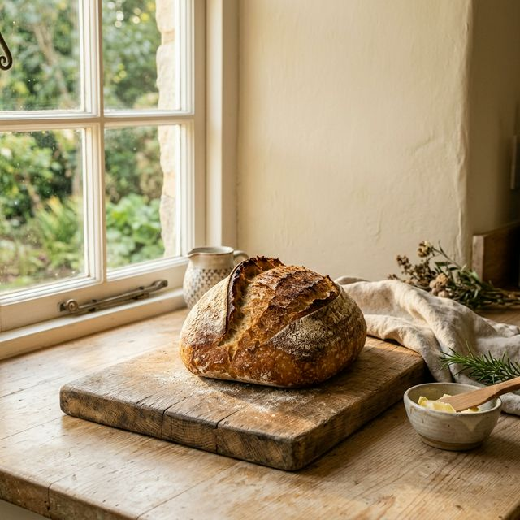
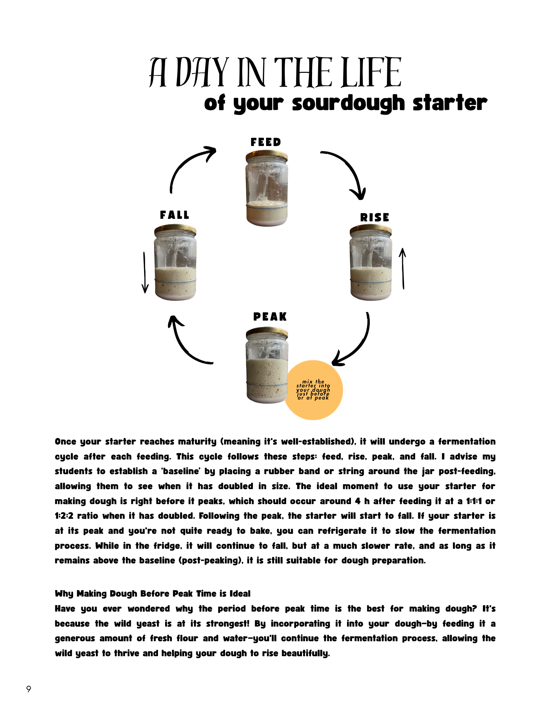
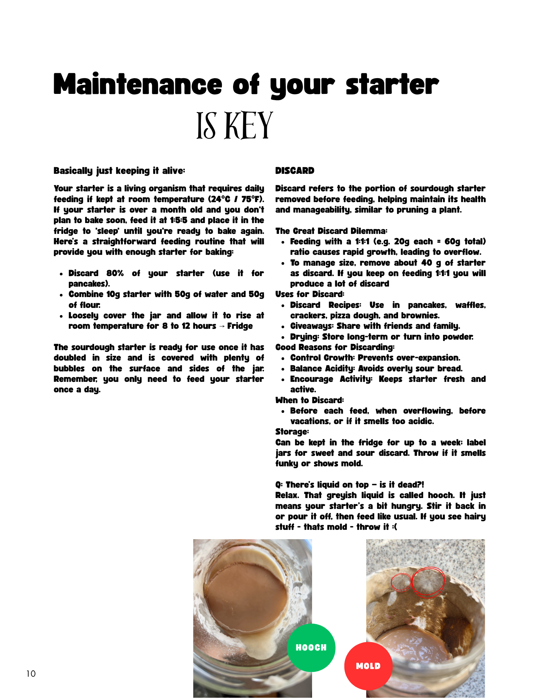
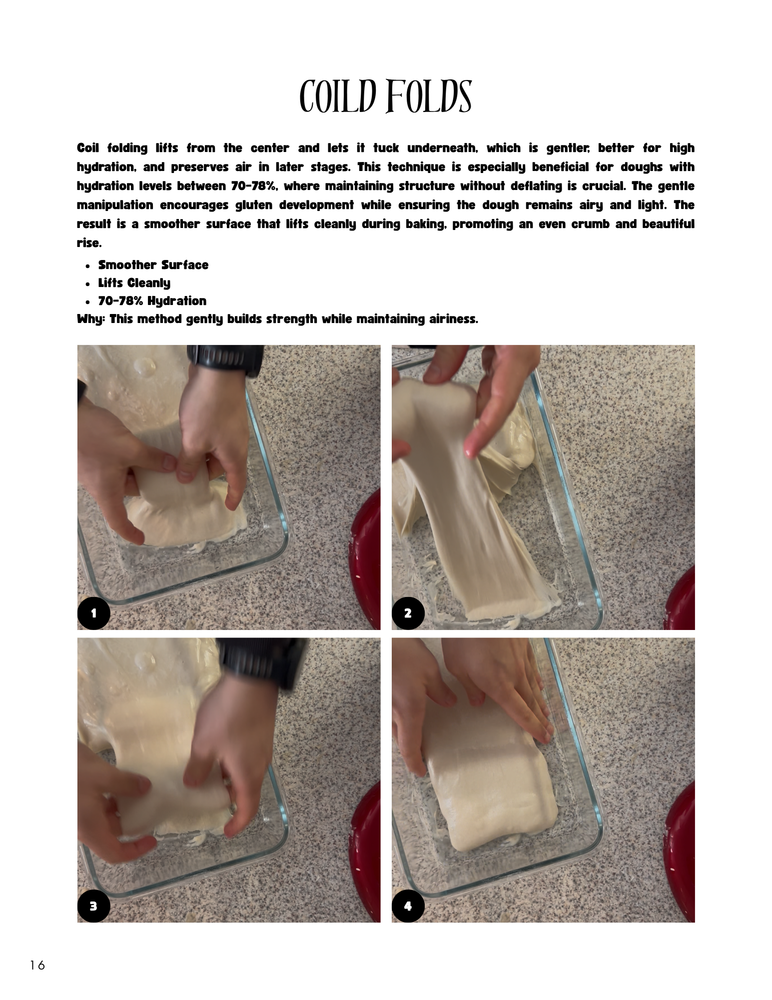

Same recipe. Completely different results.

Left
- Flat
- Dense
- No oven spring
- Inconsistent
Right
- Strong rise
- Open crumb
- Controlled fermentation
- Repeatable results
It’s not the recipe. It’s the system.
Here’s exactly how to fix your next loaf — without guessing.
Fix My Next Loaf Instant download · Just $9
It’s not the recipe. It’s the system.
You followed the steps.
But no one taught you how to read your dough.
That’s why one loaf turns out flat while another rises beautifully.
A practical beginner-friendly digital guide that helps you understand what went wrong and improve your next bake.

Know when your starter is actually ready

Keep your starter alive without overcomplicating it

Learn folds that build strength without guesswork
Made by a real home baker who learned loaf by loaf — not by a baking school.